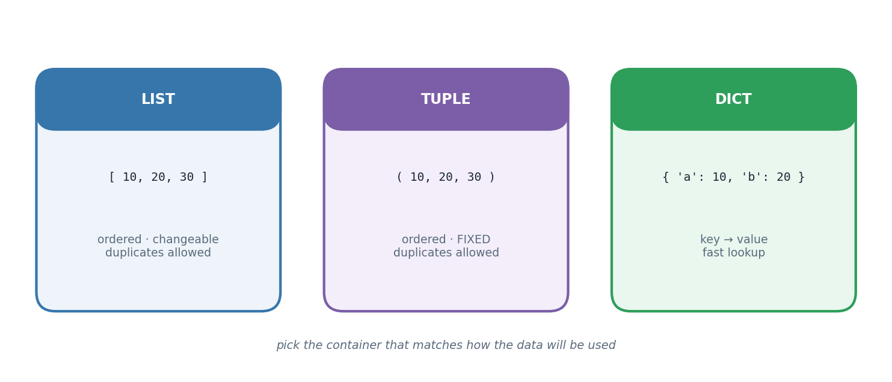

The big idea
A single variable holds one fact. Real problems involve collections of facts: every student's marks, every city's population, every film in a catalogue. Python gives you three workhorse containers, and they are not interchangeable — each encodes a different promise about the data.
A list is ordered and changeable. Use it as your default whenever you have a sequence of similar things that might grow, shrink, or be reordered.
A tuple is ordered and fixed. Once created it cannot be modified. That immutability sounds like a limitation but is really a guarantee: a coordinate pair, an RGB colour, a database row — things that should not accidentally change. Because tuples are immutable they are also hashable, which means they can be dictionary keys where lists cannot.
A dictionary abandons position entirely and organises by key. Instead of "the third item", you
ask for "the item filed under 'Mumbai'". Lookup is near-instant no matter how large the dictionary
gets, because keys are hashed rather than searched.
The professional habit worth building here is modelling: before writing any loop, ask what shape the data really has. A list of dictionaries — the structure used for the movie catalogue in this chapter — is the shape almost every real dataset takes, and it is exactly what a Pandas DataFrame becomes in Experiment 10.

How it works
Quick comparison
| List | Tuple | Dict | |
|---|---|---|---|
| Written as | [1, 2, 3] |
(1, 2, 3) |
{"a": 1} |
| Ordered | yes | yes | yes (insertion order) |
| Changeable | yes | no | yes |
| Duplicates | yes | yes | keys must be unique |
| Access by | position | position | key |
| Can be a dict key | no | yes | no |
List comprehensions
The comprehension is Python's signature construct — a loop, a filter and a result in one line:
squares = [n * n for n in range(10) if n % 2 == 0]
Read it left to right as English: "n times n, for each n in range 10, where n is even." Use them for straightforward transformations; if you need several statements or nested conditions, a normal loop is clearer, and clarity wins.
Working with dictionaries
| Call | Gives you |
|---|---|
d.keys() |
all the keys |
d.values() |
all the values |
d.items() |
key-value pairs, ideal for looping |
d.get(k, default) |
the value, or a fallback if the key is missing |
.get() with a default is what makes the counting idiom safe — no KeyError on the first sighting of
a new key.
Sorting with a key
sorted(data, key=..., reverse=True) sorts any collection. The key argument takes a function that
extracts what to sort by — key=len sorts strings by length, key=lambda m: m["year"] sorts a list
of dictionaries by a field. This is the general tool behind "find the runner-up", "find the longest",
and every ranking problem.
The tasks
Everything above was theory. What follows is the lab work — each task stated, explained, then solved with code that really ran.
Task 1
Task 1 — Tallying Values in a Fixed Range (0-3)
collections.Counter does the counting; a dict comprehension fills in any
value from 0-3 that never appeared, so the report is always complete.
from collections import Counter readings = [1, 2, 0, 3, 1, 1, 2, 0, 3, 3, 3, 2] tally = Counter(readings) full_report = {v: tally.get(v, 0) for v in range(4)} for value, occurrences in full_report.items(): print(f"{value} occurred {occurrences} time(s)")
0 occurred 2 time(s) 1 occurred 3 time(s) 2 occurred 3 time(s) 3 occurred 4 time(s)
Task 2
Task 2 — Average of a Numeric Tuple
measurements = (22.5, 19.0, 31.2, 27.8, 24.4) mean_value = sum(measurements) / len(measurements) print("Tuple:", measurements) print(f"Average: {mean_value:.2f}")
Tuple: (22.5, 19.0, 31.2, 27.8, 24.4) Average: 24.98
Task 3
Task 3 — Runner-Up Score
Sort the distinct scores in descending order and pick the second entry.
match_scores = [4, 7, 7, 9, 3, 9] distinct_desc = sorted(set(match_scores), reverse=True) runner_up_score = distinct_desc[1] print("Runner-up score:", runner_up_score)
Runner-up score: 7
Task 4
Task 4 — A Name-to-City Dictionary
Names as keys, home city as values, plus a per-city headcount built with
Counter on the values.
from collections import Counter roster = { "Ishaan": "Pune", "Tanvi": "Nagpur", "Devika": "Pune", "Farhan": "Nashik", "Om": "Nagpur", } print("Names :", list(roster.keys())) print("Cities :", list(roster.values())) print("\nName -> City:") for person, hometown in roster.items(): print(f" {person} -> {hometown}") city_headcount = Counter(roster.values()) print("\nStudents per city:") for city, total in city_headcount.items(): print(f" {city}: {total}")
Names : ['Ishaan', 'Tanvi', 'Devika', 'Farhan', 'Om'] Cities : ['Pune', 'Nagpur', 'Pune', 'Nashik', 'Nagpur'] Name -> City: Ishaan -> Pune Tanvi -> Nagpur Devika -> Pune Farhan -> Nashik Om -> Nagpur Students per city: Pune: 2 Nagpur: 2 Nashik: 1
Task 5
Task 5 — A Small Movie Catalog
A list of dictionaries, one per movie, queried a few different ways: pre-2015 releases, profitable titles, and films by a chosen director.
catalog = [ {"title": "Silver Horizon", "year": 2011, "director": "Meera Nair", "budget": 60, "gross": 95}, {"title": "Echo Point", "year": 2019, "director": "Sanjay Rao", "budget": 80, "gross": 70}, {"title": "The Last Reel", "year": 2013, "director": "Meera Nair", "budget": 35, "gross": 50}, ] print("Full catalog:") for film in catalog: print(" ", film) print("\nReleased before 2015:") for film in catalog: if film["year"] < 2015: print(" ", film["title"]) print("\nProfitable titles:") for film in catalog: if film["gross"] > film["budget"]: print(" ", film["title"]) chosen_director = "Meera Nair" print(f"\nDirected by {chosen_director}:") for film in catalog: if film["director"].lower() == chosen_director.lower(): print(" ", film["title"])
Full catalog:
{'title': 'Silver Horizon', 'year': 2011, 'director': 'Meera Nair', 'budget': 60, 'gross': 95}
{'title': 'Echo Point', 'year': 2019, 'director': 'Sanjay Rao', 'budget': 80, 'gross': 70}
{'title': 'The Last Reel', 'year': 2013, 'director': 'Meera Nair', 'budget': 35, 'gross': 50}
Released before 2015:
Silver Horizon
The Last Reel
Profitable titles:
Silver Horizon
The Last Reel
Directed by Meera Nair:
Silver Horizon
The Last Reel
Common pitfalls
= does not copy a listb = a makes both names point at the same list. Use a.copy() or a[:] for a genuine copy.(5) is just the number 5. A one-element tuple needs the comma: (5,).KeyError on a missing keyd[k] raises if the key is absent; d.get(k, default) doesn't.sorted([1, "two"]) raises a TypeError. Sort comparable things.